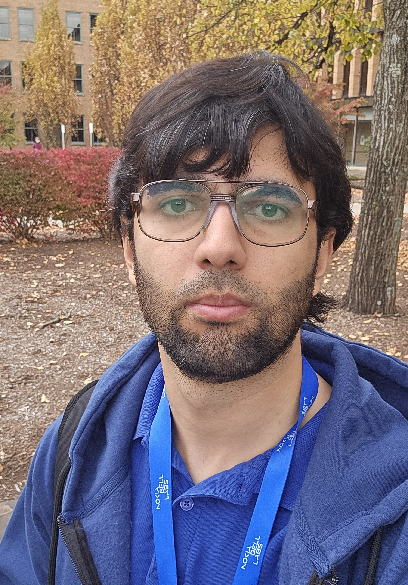

I received the B.S. (summa cum laude) and Ph.D. degrees in Electrical and Computer Engineering (ECE) from Cornell University, Ithaca, NY, USA, in 2019 and 2025, respectively. I received the 2025 Cornell ECE Outstanding Ph.D. Thesis Research Award and the 2026 IEEE Information Theory Society Thomas M. Cover Dissertation Award. My research focuses on information theory: source coding, channel coding and joint source-channel coding. I study fundamental limits and bounds using mostly theoretical tools like mathematical analysis and optimization theory. Feel free to reach out for research collaboration.
My articles are in the following problem areas (some articles appear under more than one category):
You can view my CV here.